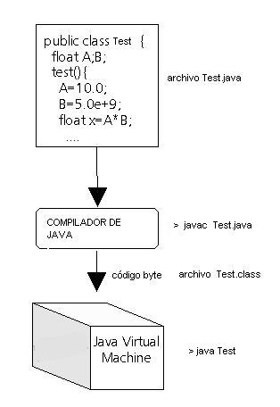
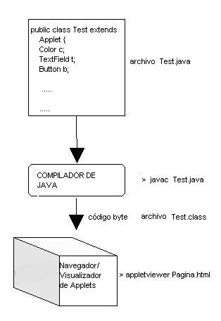
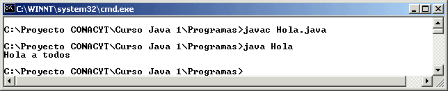
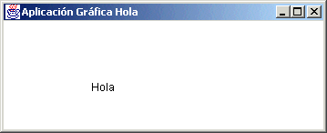
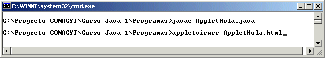
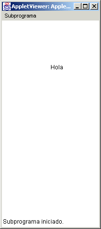
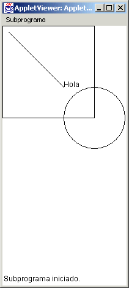
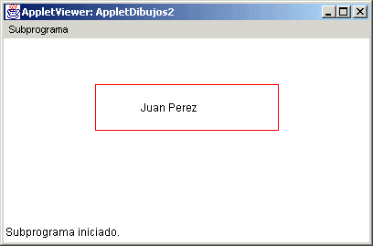

Módulo 1:
Introducción a la Programación Orientada a Objetos 
2. Creación de una Aplicación y un Applet
La manera de utilizar una clase previamente definida en Java es a través de una Aplicación modo texto o Aplicación modo gráfico (clase Frame) o un Applet (clase Applet).
Una aplicación es una clase de Java que corre como una específica aplicación en cualquier ambiente operativo, puede tener referencias a archivos, interfaz gráfica (si se desea), etc.
Un applet es una clase de Java que corre dentro de un navegador y que no puede hacer referencias a archivos, también posee su interfaz gráfica.
Una aplicación debe compilarse con el archivo ejecutable javac que es el que compila dentro del paquete de java y ejecutarse con el archivo
ejecutable java, se genera un archivo de código byte (extensión .class) que es el que se interpreta por la Java Virtual Machine, que es la que
depende de la máquina que utilices y de esa manera se ejecuta en cualquier ambiente, como se muestra en la figura:

El comando que aparece despues del prompt > es el que se teclea dentro de una ventana de comandos del DOS.
Un applet sigue un camino parecido pero para poder visualizarse se requiere que este applet este inmerso en una página de Web, lo cual se
puede hacer a través de algun editor de páginas Web, insertando un java applet en alguna opción avanzada o incrustando dentro del código de
HTML las siguientes instrucciones:
<applet width="500" height="700" code="nombreapplet">
</applet>
Donde nombreapplet es el nombre del applet a utilizar, se sugiere que cuando se pruebe un applet para revisar su operación, se utilice el
visualizador de applets provisto por java, tal como se muestra la figura:

Esta recomendación de la prueba de applets obedece a que si se prueba bajo un navegador de Web, aunque se hagan cambios al applet, el
navegador mostrara el codigo cargado en el momento que se ejecutó por primera vez el navegador, por lo cual tendria que abandonarse la
aplicación del navegador y volver a abrirla para poder ver los cambios en el applet que se este trabajando.
Aplicación
La manera de definir una Aplicación es muy sencilla, es una clase que tiene un método llamado main, dentro del cual se escriben las instrucciones que se requiere sean ejecutadas por el tiempo que dure la aplicación, muy parecido como pasa con el lenguaje de programación C++.
A continuación se muestra una aplicación muy sencilla:
public class Hola
{
public static void main(String args[])
{
System.out.println("Hola a todos");
}
}
Esta clase es tecleada en un editor de textos, compilada con el comando javac Hola.java en una ventana de comandos del DOS y es ejecutada
con el comando java Hola
Un ejemplo de la presentación de esta clase sería:

Esto sería una aplicación con interfaz modo texto para desplegar un Hola.
Toda aplicación en Java utiliza clases ya creadas anteriormente, y a través de definir y crear objetos de esas clases, es como puede llevar a cabo las funciones necesarias y propias de la aplicación. La aplicación anterior utiliza un método llamado println(), el cual se utiliza para desplegar algo en la ventana en modo texto, su uso más sencillo sin tener que crear un objeto de una clase es a través de llamarlo mediante la clase System.out. Posteriormente revisaremos alguna aplicación donde el método println() es utilizado a través de un objeto que maneja el flujo de salida, lo cual sería la manera más adecuada de hacerlo.
La manera de hacer lo mismo en forma gráfica sería que la clase Hola fuera una clase que herede de la clase Frame, la cual en Java es utilizada para manejar una aplicación con Interfaz Gráfica.
A continuación se muestra un ejemplo de esta misma clase de aplicación con Interfaz Gráfica:
import java.awt.*;
import java.awt.event.*;
public class Holag extends Frame implements WindowListener {
public static void main(String[] args) {
Holag x = new Holag();
x.setSize(400,500);
x.setTitle("Aplicación Gráfica Hola");
x.setVisible(true);
}
public Holag() {
addWindowListener(this);
}
public void paint(Graphics g) {
g.drawString("Hola", 100, 100);
}
public void windowClosing(WindowEvent e) {
System.exit(0);
}
public void windowOpened(WindowEvent e){}
public void windowClosed(WindowEvent e){}
public void windowActivated(WindowEvent e){}
public void windowDeactivated(WindowEvent e){}
public void windowIconified(WindowEvent e){}
public void windowDeiconified(WindowEvent e){}
}
Dicha clase mostrará la siguiente ventana:

Mientras que tambien estará activa (atrás) la ventana de comandos del DOS.
Algunas cosas que puedes entender por ahora es que cuando se trabaja en POO (Programación Orientada a Objetos) la mejor manera de hacer esto es a través de definir y crear objetos de clases, por lo mismo se esta creando un objeto de la misma aplicación, lo cual es muy común cuando hacemos aplicaciones gráficas. Observarás varios métodos que están vacios, esto es porque esta clase aplicación está heredando de una clase llamada Frame y existe una clausula llamada implements WindowListener, lo cual nos permite implementar algunos métodos de otras clases (ya que como mencionamos anteriormente no hay herencia múltiple), esta es la mejor manera de utilizar los métodos de otras clases. Todos los métodos que se nombran con la palabra window al principio pertenecen a esta clase y al implementar la clase debemos escribir todos los métodos de la clase que implementamos, aunque no tengan instrucciones en el.
Posteriormente se explicarán algunos detalles que ahora no comprenderás de la clase mostrada anteriormente, la idea aquí es que conozcas las dos diferentes maneras de mostrar una aplicación: texto y gráfica.
Applet
Un applet es una clase que posee interfaz gráfica y que está inmerso en un navegador, de manera que para poderlo utilizar requieres ejecutar el navegador o el visualizador de applets de Java.
Un applet (que es el que manejaremos más en este curso) esta compuesto por varios métodos que utlizamos de acuerdo a lo que deseamos realizar en nuestra aplicación en Web.
Como puedes revisar en la clase anterior la Holag, las primeras instrucciones son de import, estas sirven para poder incluir en nuestra aplicación de Java, otras clases que han sido codificadas anteriormente, como lo hace cualquier otro lenguaje, como el include de C++.
En la carpeta de java, existen algunas carpetas que tienen clases que estan separadas por paquetes, de acuerdo a la función de estas clases, todas las clases que tienen que ver con interfaz gráfica estan dentro del paquete awt, es por eso que necesitamos incluir todas las clases que estan dentro de este paquete, para eso utilizamos la instrucción de java import java.awt.*; lo cual le dice a Java que si se requiere alguna clase que no se encuentre en el directorio en el cual esta la clase actual, la busque en el paquete descrito, en este caso dentro de java, la carpeta awt.
Existe una clase de java muy peculiar llamada Applet, esta clase se encarga de mostrar una aplicación en Web, esta clase ya esta previamente definida, y para poder hacer un applet es necesario que se defina una clase que herede de la clase Applet, de manera que el usuario solo se encarga de reescribir los métodos necesarios para definir su nueva aplicación en Web.
Veamos un ejemplo de un applet sencillo Hola y analicemos este applet (AppletHola.java):
import java.awt.*;
import java.applet.*;
public class AppletHola extends Applet {
public void paint(Graphics g) {
g.drawString("Hola", 100, 100);
}
}
La manera de visualizar este applet es a traves de una página de Web, como la siguiente (AppletHola.html):
<html>
<head>
<title>Applet Hola </title>
</head>
<body>
<applet width="200" height="400" code="AppletHola"></applet>
</body>
</html>
La forma de visualizar este applet es compilando y ejecutando el visualizador de applets de java, como se muestra a continuación:

Una muestra del applet en pantalla inmerso en la pagina de Web seria:

A diferencia de una aplicación, un applet debe heredar de la clase Applet, en ella existen algunos métodos predefinidos a través de los cuales vamos a dibujar o desplegar los elementos gráficos en nuestra ventana, es por esto que utilizamos el método paint, en este método desplegamos lo que deseamos aparezca en la pantalla, y eso es a través de un objeto de la clase Graphics, entonces ahora entendemos que solo a través de este objeto es que podemos dibujar.
Normalmente se define el objeto de la clase Graphics como g, pero puede ser que tu uses otro, dentro del método paint, la manera de dibujar es utilizando los métodos de la clase Graphics, en este caso para dibujar letras podemos usar el método drawString(), el cual requiere se le defina un string (cadena de caracteres) y la coordenada en la cual se desea dibujar, empezando por la coordenada x y siguiendo la coordenada y.
Existen una serie de métodos posibles a utilizar con el objeto gráfico de la clase Graphics, como por ejemplo el drawLine(), el cual dibuja una línea, tiene los parámetros coordenadas iniciales "x" y "y", y coordenadas finales "x" y "y". Una ejemplo pudiera ser g.drawLine(10,10, 100, 100); el cual dibuja una linea de la coordenada 10, 10 a la coordenada 100,100. A continuación utilizaremos un ejemplo de un applet dibujando líneas, rectángulos y círculos:

Esto se hace a través de utilizar el método mencionado drawLine() y los métodos nuevos drawRect() y drawOval(), como se observa en el código siguiente:
import java.awt.*;
import java.applet.*;
public class AppletDibujos1 extends Applet {
public void paint(Graphics g) {
g.drawString("Hola", 100, 100);
g.drawLine(10,10, 100, 100);
g.drawRect(0, 0, 150, 150);
g.drawOval(100, 100, 100, 100);
}
}
A partir de este momento es importante que aprendas a conocer y utilizar la definición de las clases descritas en la API (App¿) , cada vez que utilices una clase nueva que no conoces es importante que visites su documentación en la java API, ya que de esa manera puedes saber que constructores tienen, que metodos pueden ser utilizados y cuales son los parámetros a utilizar en cada uno.
Como ejercicio entra a revisar la clase Graphics y reconoce como están definidos los parámetros de los métodos drawString(), drawLine(), drawRect() y drawOval() utilizados en el applet anterior.
1. Escribe la clase NombreApplet.java, la cual debe heredar de Applet y escribir tu nombre, el cual debe aparecer dentro de un rectángulo, haz que tu nombre aparezca en negro y el rectángulo sea rojo, para esto utiliza el método setColor(), consultándolo en la clase Graphics, como se muestra en la figura:

2. Copia la aplicación gráfica Holag.java y renombrala como NombreAplicacion.java reemplaza en ella el método paint que creaste en el punto anterior, y ejecutala para que revises la misma salida que obtuviste en el applet anterior, pero ahora con una aplicación gráfica.
http://java.sun.com/docs/books/tutorial/getStarted/application/classdef.html
http://java.sun.com/docs/books/tutorial/getStarted/cupojava/win32.html
http://java.sun.com/j2se/1.4.2/docs/api/index.html buscar Frame, Applet.